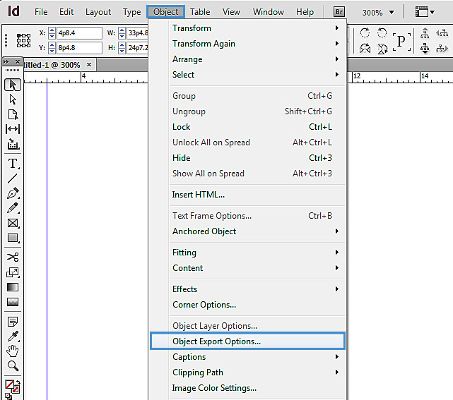
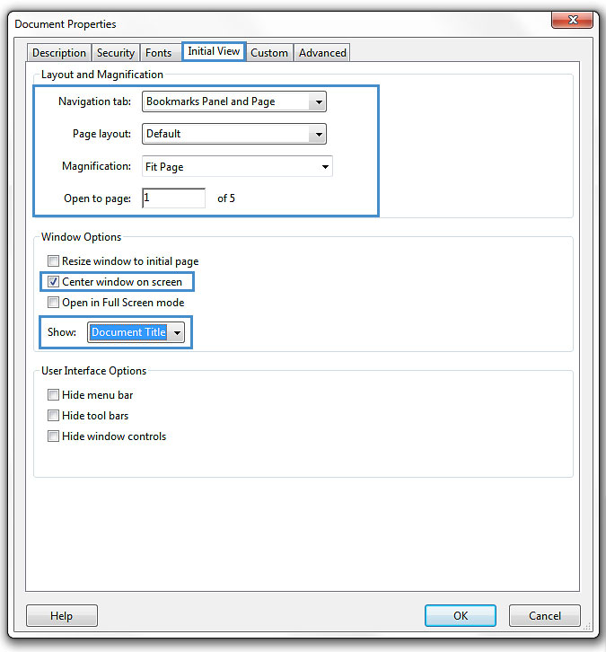
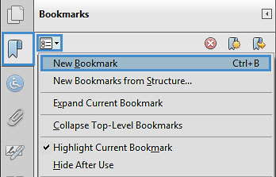
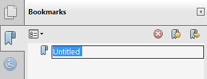

Authoring Techniques for Accessible Office Documents: Adobe Acrobat 11 Pro
Quick Reference
- Usage Notes
- "Make Accessible" Action Wizard
- Technique 1. Use Accessible Source Documents
- Technique 2. Check Accessibility
- Technique 3. Add and Edit Tags
- Technique 4. Provide Alternative Text
- Technique 5. Set a Logical Reading Order
- Technique 6. Set Document Properties
- Technique 7. Adjust Security Settings
- Technique 8. Set Bookmarks
- Accessibility Support Tools
- Accessibility Help
- References and Resources
- Acknowledgments
Usage Notes
At the time of testing (April 2013), Acrobat 11 Pro (Windows) enables the production of accessible digital documents. Acrobat 11 Pro includes an accessibility checking feature.
Note: While PDF accessibility has improved over the years, accessibility support for PDF by authoring tools, viewers and assistive technologies (e.g. screen readers) is not as widespread as for HTML documents. We recommend considering HTML instead of or in addition to PDF where appropriate.
Should I use ADOD or WCAG 2.0?
These techniques can help you to use Acrobat 11 Pro to create documents that are:
- Intended to be used by people (i.e. not computer code),
- Text-based (i.e. not simply images, although they may contain images),
- Fully printable (i.e. where dynamic features are limited to automatic page numbering, table of contents, etc. and do not include audio, video, or embedded interactivity),
- Self-contained (i.e. without hyperlinks to other documents, unlike web content), and
- Typical of office-style workflows (Reports, letters, memos, budgets, presentations, etc.).
Note: If you are creating forms, web pages, applications, or other dynamic and/or interactive content, these you should also consult the W3C-WAI Web Content Accessibility Guidelines (WCAG 2.0). The WCAG working group has provided PDF Techniques for WCAG 2.0.
File Formats
The default file format for Acrobat 11 Pro is Adobe Portable Document Format (PDF). In addition, Acrobat 11 Pro offers several other word processor and web format saving options. These have not been checked for accessibility.
Document Conventions
We have tried to write these techniques so that they are useful to all authors, regardless of whether they use a mouse. However, for clarity there are several instances where mouse-only language is used. Below are the mouse-only terms and their keyboard alternatives:
- *Right-click: To right-click with the keyboard, select the object using the Shift+Arrow keys and then press either (1) the “Right-Click” key (some keyboard have this to the right of the spacebar) or (2) Shift+F10.
- *Drag: Unfortunately, there is no keyboard alternative for several operations in Acrobat 11 Pro that require dragging.
Disclaimer and Testing Details:
- Following these techniques will increase the accessibility of your documents, but it does not guarantee accessibility to any specific disability groups. In cases where more certainty is required, it is recommended that you test the office documents with end users with disabilities, including screen reader users.
- The application-specific steps and screenshots in this document were created using Adobe Acrobat 11 Pro (ver.11.0, Windows 7, April. 2013)
- Unfortunately, tasks completed in Technique 3, Technique 4, and Technique 5 cannot be undone. It is recommended that you save your PDF document often under different names, especially before you make significant changes.
- This document is provided for information purposes only and is neither a recommendation nor a guarantee of results.
- If errors are found, please report them to: adod-comments@idrc.ocad.ca.
"Make Accessible" Action Wizard
The "Make Accessible" Action Wizard can help you create accessible PDFs by leading you through the techniques in this guide (e.g. setting alternative text, setting document properties, etc.). You can complete the wizard in its entirety by pressing Start or you can follow the the instructions below:
- Select Add Document Description

- Fill in the Title (author, subject and keywords can also be filled in). See also Technique 6.

- Select Set Open Options
- Select Set Tabs Order Property
- Select Set Reading Language
- In the drop down menu, select the language for the file). See also Technique 6.

- Select Add Tags to Document
Note: This will automatically add tags to the file. Unfortunately, this process sometimes misinterprets the structure and reading order of complex page elements. Therefore, you should still manually check the tags (see Technique 3). - Select Set Alternative Text. See also Technique 4.
The wizard automatically searches for" figures" in the file. You must then fill in the alternate text in the pop up box.Note: The wizard might not tag all the images as figures, so check if tags are correct.
- Select Run Accessibility Full Check. See also Technique 2.
- Recognize Text using OCR.
- Detect Form Fields. This is only required if the file is intended to be a fillable form.
Technique 1. Use Accessible Source Documents
In the Adobe Acrobat 11 Pro workflow, all PDF documents start with a source document created in an office document authoring application, such as Microsoft Word or OpenOffice.org Writer. Because source documents provide the starting-point for the PDF documents, accessibility is very important.
To create an accessible source document
- Create a new document in the authoring application (from the default blank template or from one of the pre-packaged templates).
- Ensure that you follow the ADOD Authoring Techniques provided for the authoring application (available at: http://inclusivedesign.ca/accessible-office-documents).
- When you are finished, you should also check the accessibility of the document (see “Accessibility Checking” in the Authoring Techniques for the authoring application).
Once you have completed the above steps, you are ready to convert your document to PDF using Adobe Acrobat 11.
To convert single source documents to PDF
- Go to the menu item: File > Create > PDF From file...
- Locate and select your source document and select the Open button, Acrobat will then proceed to convert the file.
A batch conversion process is also available from the menu item: File > Create PDF > Batch Create Multiple Files.
Scanned Content
If you created a PDF from a scanned document, then it will be inherently inaccessible to screen readers and other assistive technologies. The document will be less useful because graphic representations of text cannot be selected, edited or searched.
In this case, it is necessary that you convert the scanned images of text to searchable content using Acrobat's optical character recognition (OCR) feature before addressing the accessibility features of the document.
Technique 2. Check Accessibility
The most basic requirement for a PDF document to be accessible is for it to be "tagged" with hidden labels ("tags") that describe the structure of the document (e.g. that text should be interpreted as a header, paragraph, table cell, etc.). Screen readers can use these tags to convey the document's information effectively to people with visual disabilities.
The other requirements for a PDF document to be accessible (e.g. alternate text, logical reading order, etc.) can only all apply once the document is tagged.
Caution!: The "Quick Check" feature is not recommended because it misses some important accessibility issues. Always perform a "Full Check" instead.
To perform a "Full Check"
Note: If "Accessibility" is not visible under tools, go to menu item: View > Tools > Accessibility
- Select Tools > Accessibility > Full Check Up

- Once the file is fully run through the checker, a panel will show which parts of the files are correct and which parts need to be fixed

Technique 3. Add and Edit Tags
Caution!: Actions taken using the TouchUp Reading Order tool and Order Panel cannot be undone and in some cases Acrobat may misinterpret your intentions. Remember to save your work frequently! If you frequently create PDF files you might consider using one of these accessible PDF support tools.
If tags are missing, then they must be added. When tags are present, they should still be checked for correctness and edited as needed..
Touch Up Reading Order Tags
The TouchUp Reading Order dialog box offers some basic document tag options. Acrobat's Help text describes the tags as follows:
- Text
- Tags the selection as text.
- Figure
- Tags the selection as a figure. Text contained within a figure tag is defined as part of the image and is not read by screen readers, though alternate text defined for the figure is read out. Note: An effective way of handling very complex text constructs (e.g. flow charts) is to group it all as a figure and then provide a unified alt text description for the entire group.
- Form Field
- Tags the selection as a form field.
- Figure/Caption
- Tags a selected figure and caption as a single tag. Any text contained in the tag is defined as a caption. Useful for tagging photos and captions and preventing caption text from being incorrectly added to adjacent text blocks. Note: Unless the caption actually describes the image, the figures will still require alternate text.
- Heading 1, Heading 2, Heading 3
- Tags the selection as a first, second, third, fourth, fifth, or sixth level heading tag. You can convert heading tags to bookmarks to help users navigate the document.
- Table
- Tags the selection as a table. When this selection is made, Acrobat analyzes the selection to determine the location of headings, columns, and rows.
Note: Table editing can be especially challenging. Try to keep them as simple as possible in the source document. - Cell
- Tags the selection as a table or header cell. Use this option to merge cells that are incorrectly split.
Note: Table editing can be especially challenging. Try to keep them as simple as possible in the source document. - Formula
- Tags the selection as a formula. Note: Because speech software may handle formula tags differently from normal text, you should still add alternate text.
- Background
- Tags the selection as a background element, or artifact, removing the item from the tag tree so that it does not appear in the reflowed document and is not read by screen readers.
Additional Tags
Not all tags are available using the TouchUp Reading order dialog window. Additional tags can be accessed from the Tags pane. See the Editing tags using the Tags pane section for more information.
Document Section Tags
There are additional tags that help define semantic and structural file elements in more detail. The Adobe Acrobat website categorizes and defines all standard tags as follows (some appear in the section above):
- Container elements
- Container elements are the highest level of element and provide hierarchical grouping for other block-level elements.
- Document
- Document element. The root element of a document’s tag tree.
- Part
- Part element. A large division of a document; may group smaller units of content together, such as division elements, article elements, or section elements.
- Div
- Division element. A generic block-level element or group of block-level elements.
- Art
- Article element. A self-contained body of text considered to be a single narrative.
- Sect
- Section element. A general container element type, comparable to Division (DIV Class="Sect") in HTML, which is usually a component of a part element or an article element.
Heading and Paragraph Elements
Heading and paragraph elements are paragraph-like, block-level elements that include specific level heading and generic paragraph (P) tags. A heading (H) element should appear as the first child of any higher-level division. Six levels of headings (H1 to H6) are available for applications that don’t hierarchically nest sections (See TouchUp Reading Order Tags section above for more).
Label and List Elements
Label and list elements are block-level elements used for structuring lists.
- L
- List element. Any sequence of items of similar meaning or other relevance; immediate child elements should be list item elements.
- LI
- List item element. Any one member of a list; may have a label element (optional) and a list body element (required) as a child.
- LBL
- Label element. A bullet, name, or number that identifies and distinguishes an element from others in the same list.
- LBody
- List item body element. The descriptive content of a list item.
Special Text Elements
Special text elements identify text that isn’t used as a generic paragraph (P).
- BlockQuote
- Block quote element. One or more paragraphs of text attributed to someone other than the author of the immediate surrounding text.
- Caption
- Caption element. A brief portion of text that describes a table or a figure.
- Index
- Index element. A sequence of entries that contain identifying text and reference elements that point out the occurrence of the text in the main body of the document.
- TOC
- Table of contents element. An element that contains a structured list of items and labels identifying those items; has its own discrete hierarchy.
- TOCI
- Table of contents item element. An item contained in a list associated with a table of contents element.
Table Elements
Table elements are special elements for structuring tables.
- Table
- Table element. A two-dimensional arrangement of data or text cells that contains table row elements as child elements and may have a caption element as its first or last child element.
- TR
- Table row element. One row of headings or data in a table; may contain table header cell elements and table data cell elements.
- TD
- Table data cell element. A table cell that contains non-header data.
- TH
- Table header cell element. A table cell that contains header text or data describing one or more rows or columns of a table.
Inline-Level Elements
Inline-level elements identify a span of text that has specific formatting or behavior. They are differentiated from block-level elements. Inline-level elements may be contained in or contain block-level elements.
- BibEntry
- Bibliography entry element. A description of where some cited information may be found.
- Quote
- Quote entry element. An inline portion of text that is attributed to someone other than the author of the text surrounding it; different from a block quote, which is a whole paragraph or multiple paragraphs, as opposed to inline text.
- Span
- Span entry element. Any inline segment of text; commonly used to delimit text that is associated with a set of styling properties.
Special Inline-Level Elements
Similar to inline-level elements, special inline-level elements describe an inline portion of text that has special formatting or behavior.
- Code
- Code entry element. Computer program text embedded within a document.
- Figure
- Figure entry element. A graphic or graphic representation associated with text.
- Form
- Form entry element. A PDF form annotation that can be or has been filled out.
- Formula
- Formula entry element. A mathematical formula.
- Link
- Link entry element. A hyperlink that is embedded within a document. The target can be in the same document, in another PDF document, or on a website.
- Note
- Note entry element. Explanatory text or documentation, such as a footnote or endnote, that is referred to in the main body of text.
- References
- Reference entry element. A citation to text or data that is found elsewhere in the document.
To add tags automatically
Note: The automatic tagging feature may be sufficient on simple layouts, but it sometimes misinterprets the structure and reading order of complex page elements (e.g. closely spaced columns, irregular text alignment, and tables without borders.). Therefore, use the automatic tagging feature as a starting point, and always manually check and edit the tags as explained below.
- Go to menu item: Tools > Accessibility > Add Tags To Document
*To Show the hidden "Accessibility" drop down menu Go to menu item: View > Tools > AccessibilityNote: This command removes any tags that were in the document before the command was run. If any potential problems were encountered, an Add Tags Report appears in the navigation pane.
To add/edit tags manually
There are two ways of adding and editing tags in Adobe Acrobat. You can either do it through the TouchUp Reading Order dialog box, or using the Tags navigation pane.
Note: Some tag types are not available through the TouchUp Reading Order dialog box. For documents with complex layouts and elements, use it together with the Tags pane method described below.
Adding/Editing tags using TouchUp Reading Order
- Go to menu item: Tools > Accessibility > TouchUp Reading Order…
In most cases, it will help to have the four checkboxes checked (Show page content groups, Show table cells, Display like elements in a single block, Show tables and figures) - Using the TouchUp Reading Order tool, drag* within the document pane to select a region of the page that contains one type of content (e.g. a text block)
Note: If you drag* over part of an already tagged element, the element is sometimes split up. This is helpful when splitting larger elements to ensure correct reading over of sub-elements. - To add more page content to the current selection, Shift + drag*
- To remove page content from the current selection, Ctrl + drag*
- Select the appropriate button in the TouchUp Reading Order dialog to specify the tag type, a box should now encapsulate the element (the tags are explained here)

Tips for Tagging:
- On the "Touch Up Reading Order" dialog, make sure to select the Show page content groups checkbox and the Structure types radio button. This will display the type of structure for each tag, which will help you to spot mis-tagged content.
- A good place to start is tagging "Background" content, since this will reduce the number of tags to deal with. Background content should include:
- empty boxes,
- visible or invisible textbox borders (especially in busy areas where they overlap with text),
- visuals that are decorative or redundant (e.g. backgrounds, illustrations), whose content is described adequately in the text .
- If you are having difficulty tagging complex content (e.g. a complex table), consider either:
- Editing the source document to simplify it, or
- Selecting the complex content and tagging it as a figure for which you must then add alternative text that properly conveys all of the information in the new figure
Editing tags using the Tags pane.
- Go to menu item: View > Show/Hide > Navigation Panes > Tags…
Note: For best results, use ‘Add Tags to Document’ first. You can also create a new tag using the TouchUp Reading Order dialog box and then edit it in the Tags Pane. - To change a tag, locate it in the structure tree.
- Right-click* on the tag, and select Properties. From the drop-down menu next to tag type, select the tag you would like to use.
- Alternatively, you can edit tags by clicking on the tag name once, and then typing the appropriate tag name (see list of tags above).

Technique 4. Provide Alternative Text
When using images, it is important to ensure that the information you intend to convey by the image is also conveyed to people who cannot see the image. This can be accomplished by adding concise alternative text to each image. If the image is purely decorative, mark it as background.
Tips for writing alternative text
- Try to answer the question "what information is the image conveying?"
- If the image does not convey any useful information, leave the alternative text blank (e.g. Background images should generally have no alt text, other decorative images should only have alt text if they form a crucial part of the content, message, and purpose of the document)
- If the image contains meaningful text, ensure all of the text is replicated
- For logos, the alternative text should be the organization's name
- For groups of logos, one logo can be chosen to represent the group
- Sometimes text is included as part of a logo or footer image (e.g. the image might contain a phone number), this text should be set as the alternative text of the image
- Alternative text should be fairly short, usually a sentence or less and rarely more than two sentences
- If more description is required (e.g. for a chart or graph), provide a short description in the alternative text (e.g. a summary of the trend) and more detail in the long description, see below
- Test by having others review the document with the images replaced by the alternative text
Tips for writing longer descriptions
- Long descriptions should be used when text alternatives (see above) are insufficient to answer the question "what information is the image conveying?"
- In some situations, the information being conveyed will be how an image looks (e.g. an artwork, architectural detail, etc.). In these cases, try to describe the image without making too many of your own assumptions.
- One approach is to imagine you are describing the image to a person over the phone
- Ensure that you still provide concise alternative text to help readers decide if they are interested in the longer description
- Alternatively, you can include the same information conveyed by the image within the body of the document, providing the images as an alternate to the text. In that case, the images should be marked as "Background" and you do not have to provide alternate text within the image.
To add alternative text to images
- Tools > Accessibility > Set Alternate Text
(If "Accessibility" is not listed, it can be opened from menu item: View > Tools > Accessibility - Select Ok the Adobe Acrobat pop up box
- Type in the description in the Set Alternative Text pop up box
- Select the right arrow to set alternative text on the next figure
- When complete select Save & Close
The dialog box will automatically select all the objects that are tags as figure.
To add alternative text to links
- Select the text or object for which you want to create a link.
- Right-click* the selection, and choose Create Link from the context menu.
- In the Create Link dialog box, select the appropriate options, and then follow the onscreen instructions to specify a URL, page view, or file as the link target.
Technique 5. Set a Logical Reading Order
Setting up reading order will set up the way the device will read the file out loud to view and change reading order:
- Select the Order Pane (View > Show/Hide > Navigation Panes > Order)

- Once the order pane is selected the file will show numbers per page showing the reading order.

- If the reading order is incorrect select the following information from the pane and move the information bellow or above to make the reading order correct.
To test the reading order
Sometimes it may not be clear by looking at content, what would be the most logical aural reading order. In these cases, it is recommended to preview the reading order.
Caution!: The "Read Out Loud" feature is not recommended for checking the aural order because it will provide an inaccurate .
One method for testing the reading order of your document is called "reflowing", which temporarily presents it as a single column that is the width of the document pane. Only readable text appears in the reflow view.
If the tagged PDF does not reflow the way you want, it means that the content order or reading order of the PDF contains inconsistencies. If this is the case, in addition to correcting the reading order, it may also be helpful to edit the document tags.
- Go to menu item: View > Zoom > Reflow
- To return to regular view, go to menu item: View > Zoom > Reflow
Another way to test the aural accessibility of a document is to attempt to access the document with the screen readers that your readers will use (e.g. NVDA or JAWS on Windows, VoiceOver on Mac OS).
Technique 6. Set Document Properties
It is important to set up the PDF correctly in order for assistive technologies (e.g. screen readers) to be able to present your document accurately.
- File > Properties
keyboard shortcut: Ctrl + D (on windows), Cmd + D (on Mac) - Under Descriptions tab fill in the title and author. (Subject and Keywords can also be filled in)
- Under Initial Views change the following
- Layout and Magnification
- Navigation Tab: Bookmarks Panel and pages
- Magnification: Fit Page
- Open to Page: 1
- Window Options
- Check Center window on Screen
- Show > Document Title

- Under the Advanced tab select Language and change to the preferred language. If a different natural language is used for a paragraph or selected text, this also needs to be clearly indicated.

- Select OK
To apply a language directly to selected element
- Go to menu item: View > Navigation Panels > Tags
- In the Tags tab, select the element
- Right-click* the element and select Properties…
- In the Content tab, select the language from the Language drop-down list
- Select Close
To set the page structure to document structure
- Select all the pages (ctrl + A or cmd + A) in the page Thumbnails Panel
- Select Page Properties

- Under Tab Order select Use Document Structure

- Select OK
Technique 7. Adjust Security Settings
It is possible to specify that no part of an accessible PDF is to be copied, printed, extracted, commented on, or edited. This can be accomplished by encrypting the document with password security. However, this could interfere with a screen reader’s ability to read the document, because screen readers must be able to copy or extract the document’s text in order to convert it to speech. In Acrobat 11 Pro, it is possible to maintain high-encryption-level security while at the same time providing the necessary access to assistive technologies.
To allow assistive technologies access to content
- Go to menu item: File >Properties > Security
- In the Security Method drop down menu select Password Security
- In the Password Security - Settings dialog, under Permissions, select Restrict editing and printing of the document
- For low-encryption-level security, select Enable copying of text, images, and other content
- For high-encryption-level security, select Enable text access for screen reader devices for the visually impaired (this overrides the document’s security settings only for the purpose of giving assistive software, such as screen readers, access to the content)
- Select OK

Technique 8. Set Bookmarks
A bookmark is a type of link with representative text in the Bookmarks panel in the navigation pane. Each bookmark goes to a different view or page in the document. In Acrobat 11 Pro, you can use bookmarks to mark a place in the PDF to which you want to return, or to jump to a destination in the PDF, another document, or a web page. There are several ways to create bookmarks.
Note: An Acrobat user can only add bookmarks to a document only if the security settings allow it.
To add a bookmark manually
- Bookmark > New Bookmark
 - Insert the title of the content
 - Scroll to the page that the bookmark is intended to link.
- *Right click the bookmark title > Set Destination

To add bookmarks automatically
Bookmarks can also be generated automatically from various types of structures that will be in your document if you have tagged it properly:
- Bookmark > New Bookmark from Structure (in the drop down menu in the bookmark pane)
- Select the structure to generate bookmarks from.
Accessibility Support Tools
- axesPDF: A plug-in for Microsoft Word 2007/2010 that makes it easier to create accessible PDFs (free public beta program);
- CommonLook Office: A plug-in for Microsoft Word 2007/2010 and PowerPoint 22007/010 that makes it easier to create accessible PDFs.
- CommonLook PDF: A plug-in for Adobe Acrobat that helps identify, report and correct accessibility problems.
- MadeToTag: A plug-in for for Adobe InDesign that makes it easier to create accessible PDF from InDesign documents.
- PDFGoHTML: A free Adobe Acrobat plug-in that converts tagged PDF into HTML, which can be useful in debugging tagging structures.
References and Resources
- Adobe Acrobat XI Pro Accessibility Guide
- PDF Techniques for WCAG 2.0
- WebAIM PDF Accessibility: Acrobat and Accessibility
- GAWDS Writing Better Alt Text
Acknowledgments
Authors: Vellicia Christanto, Jan Richards
This document was produced as part of the Accessible Digital Office Document (ADOD) Project. This project has been developed by the Inclusive Design Research Centre, OCAD University as part of an EnAbling Change Partnership project with the Government of Ontario and UNESCO (United Nations Educational, Scientific and Cultural Organization).

Substantial contributions have also been made to the project by AnySurfer, the City of Toronto, and OCAD University.


Authoring Techniques for Accessible Documents: Acrobat Pro 11 is licensed under a Creative Commons Attribution-ShareAlike 3.0 Unported License.
Updated: 4 August 2015